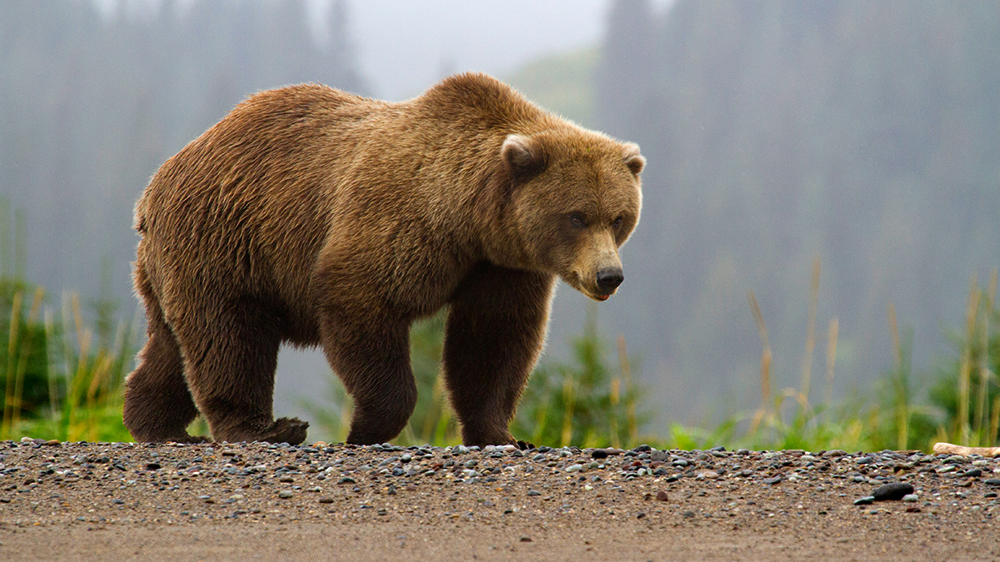

Зовнішній вигляд
Ведмідь бурий — великий ссавець із масивним тілом, густим хутром та потужними лапами. Колір шерсті може варіюватися від світло-коричневого до темно-бурого. Він має велику голову, маленькі очі та короткий хвіст.
Особливості будови
- Довжина тіла може досягати 2–3 м, маса — від 100 до 600 кг залежно від середовища проживання.
- Передні лапи дуже сильні, з довгими вигнутими кігтями, які використовуються для копання та полювання.
- Тіло вкрите густим хутром, що захищає від холоду, особливо під час зимової сплячки.
- Має добре розвинений нюх, який допомагає знаходити їжу на великій відстані.
